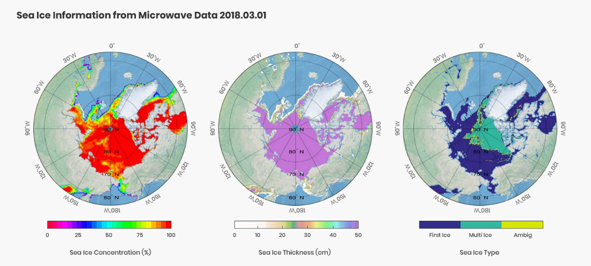
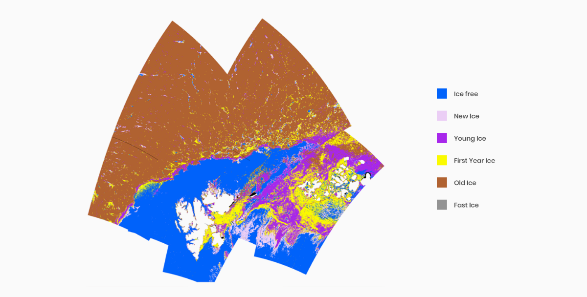
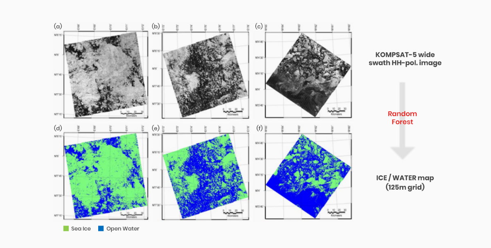

- 마이크로파 대역(주파수 0.3-300 GHz 또는 파장 1mm-1m) 전자기파의 산란 및 복사 특성을 관측하여 관측 대상의 물리적 정보를 획득하는 원격탐사 기법
- 구름 등 기상상태 및 태양의 일조조건에 거의 영향을 받지 않고, 고품질의 영상 획득이 가능한 전천후 원격탐사 기법
- 관측대상에 따른 주파수 특성, 편파특성, 후방산란특성 및 도플러 효과 등의 측정을 통해 광학 센서로는 관측이 어려운 물리적 정보의 취득이 가능
- 정보를 취득하는 방식에 따라 수동 마이크로파 원격탐사와 능동 마이크로파 원격탐사로 구분
- 수동 (Passive) 마이크로파 원격탐사
- 관측 대상의 마이크로파 복사특성을 관측하는 원격탐사 기법
-
센서가 스스로 전자기파를 송출하지 않고, 마이크로파 대역에서 자연 복사된 에너지를
관측하기 때문에 수동 마이크로파 원격탐사라 함.
- 수동 (Passive) 마이크로파 원격탐사
- 센서가 마이크로파를 직접 송출한 후, 산란되어 돌아오는 신호를 관측하는 원격탐사 기법
- 센서 스스로 마이크로파의 송수신을 담당하므로 능동 마이크로파 원격탐사라 함
마이크로파 원격탐사 센서 종류
- 영상레이더(SYNTHETIC APERTURE RADAR, SAR)
- 탑재체의 움직임으로 얻어지는 송신신호 위상의 연속적 변화를 이용하여 각 안테나 위치에서 획득된 신호들을 조합함으로써 고해상도의 영상을 합성
- 센서와 관측 대상 사이의 거리에 관계없이 고해상도의 영상 획득이 가능
-
마이크로파 산란특성 분석을 통해 해빙 유형을 분류하고 다중 SAR 영상의 간섭위상차를 이용하여 빙하의 흐름속도를 관측하는데 사용되는 등 극지과학 전 분야에서 널리 이용되고 있는
대표적인 능동 마이크로파 센서
자료 1
알래스카 북부 동토/해빙 지역에 대해 2018년 5월 4일과 6월 1일에 촬영된 아리랑 5호 SAR 영상으로부터 생성한 간섭위상 영상(interferogram)과 긴밀도 영상(coherence)
자료 2
아리랑 5호 SAR 영상으로 관측된 서남극 아문젠해 해빙과 남극 현장조사 임무 수행 중인 아라온호의 모습
- 레이더 고도계 (Radar Altimeter)
- 센서와 지표 사이의 마이크로파 이동거리를 관측하여 고도를 관측
- 해수면과 해빙의 표면고도를 측정하여 해빙의 두께를 추정하거나, 빙상 및 빙붕의 지형 관측 및 두께 변화 추정에 이용되고 있음
- 산란계 (Scatterometer)
- 지표면으로 마이크로파를 송출하고, 산란되어 되돌아오는 마이크로파 신호를 관측
- 해수 표면의 파고, 풍향, 풍속 측정 등에 사용되고 있으며, 빙체의 용융 및 동결 관측과 빙산의 추적에도 이용되고 있음
- 수동 마이크로파 센서 (Passive Microwave Radiometer)
- 다양한 마이크로파 주파수 대역의 채널을 통해 지표에서 복사되는 에너지(복사휘도)를 감지
- 공간해상도는 낮으나 동시관측범위가 넓어 매일 전 북극 및 남극을 관측 가능하며, 해빙의 농도 및 이동벡터 추출에 이용되고 있음

자료 3
수동 마이크로파 센서로 관측된 북극의 해빙농도, 해빙두께, 해빙유형 (2018년 3월 1일 관측 자료)

자료 1
이중편파 SAR 영상의 표면 텍스쳐 특성을 이용한 해빙의 종류 구분 (Park et al., 2019)

자료 2
아리랑 5호 SAR 영상의 텍스처 정보와 기계학습(Random Forest) 기법의 융합을 통한 고정밀 북극 해빙탐지 지도(Ice/Water Map) 제작 (Han et al., 2017)